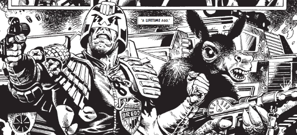

A short sequence of one-offs exploring the lives of some of the characters from Mega-City One's history (and Alec Trench). Whatever Happened to Ace Garp is a standalone tale that's instead included as part of Ace Trucking Co.
Art by Chris Weston & Garry Leach
| Story Title | Parts | Pages | w indicates a wraparound coverCovers | Year(s) | Issues | Writer | Artist | Colourist | Letterer |
|---|---|---|---|---|---|---|---|---|---|
Linked to Judge DreddTweak? | 1 | 6 | 0 | 2003 | Reprints: M388 (supplement)M214 | Pat Mills | Chris Weston (P) Garry Leach (I)various | [b&w] | Tom Frame |
Linked to: [Maria] Judge DreddMaria? | 1 | 6 | 0 | 2004 | Reprints: M388 (supplement)M215 | Gordon Rennie | Graham Manley | [b&w] | Tom Frame |
Linked to: Harlem Heroes Judge Giant, Jnr. Judge Giant, Snr.John Giant Clay? | 1 | 6 | 0 | 2004 | Reprints: M388 (supplement)M216 | Gordon Rennie | Rufus Dayglo | [b&w] | Tom Frame |
Linked to ChopperCookie? | 1 | 6 | 0 | 2004 | Reprints: M388 (supplement)M217 | Simon Spurrier | Roger Langridge | [b&w] | Roger Langridge |
| Conrad Conn? | 1 | 6 | 0 | 2004 | Reprints: M388 (supplement)M218 | Gordon Rennie | Carlos Trigo | [b&w] | Tom Frame |
Linked to Judge DreddThe Gribligs? | 1 | 6 | 0 | 2004 | Reprints: M388 (supplement)M219 | Gordon Rennie | Steve Roberts | [b&w] | Tom Frame |
| Melda Dreepe? | 1 | 6 | 0 | 2005 | Reprints: M388 (supplement)M230 | Alan Grant | Steve Roberts | [b&w] | Annie Parkhouse |
Linked to: [Alec Trench] Tharg the Mighty Uses pastich scenes from Rogue Trooper, Judge Dredd & Robo‑Hunter.Alec Trench? | 1 | 6 | 0 | 2006 | Reprints: M388 (supplement)M242 | Alan Grant | Robin Smith | [b&w] | Tom Frame |
| year | episodes | pages |
| 1994 | 0 | 0 |
| 1995 | 0 | 0 |
| 1996 | 0 | 0 |
| 1997 | 0 | 0 |
| 1998 | 0 | 0 |
| 1999 | 0 | 0 |
| 2000 | 0 | 0 |
| 2001 | 0 | 0 |
| 2002 | 0 | 0 |
| 2003 | 1 | 6 |
| 2004 | 5 | 30 |
| 2005 | 1 | 6 |
| 2006 | 1 | 6 |
| 2007 | 0 | 0 |
| 2008 | 0 | 0 |
| 2009 | 0 | 0 |
| 2010 | 0 | 0 |
| 2011 | 0 | 0 |
| 2012 | 0 | 0 |
| 2013 | 0 | 0 |
| 2014 | 0 | 0 |